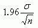
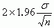
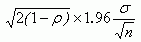
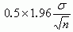
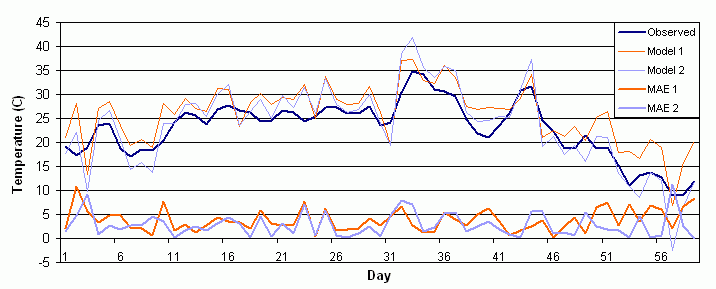

First, a fair comparison between two competing forecast systems should ideally test on the same data, with a sample size that is large enough to produce verification scores that are fairly robust. In some studies confidence intervals have been computed on the scores and examined to see whether they overlap. However, a more powerful way to measure the significance of differences between scores is to look at the confidence interval for the difference.
Consider the simple example where we have n observations on some measurement (score) in each of two groups (forecast strategies/models) and we want to know whether the underlying mean scores for the two groups are different. To keep things simple, assume that the variances in the two groups are known and are the same, s2; also the scores in the two groups are independent. Separate 95% confidences for the two means have half-widths . They will therefore overlap unless the difference between sample means exceeds.
Let us now look at a confidence interval for the difference between
two means. It will fail to include zero, indicating that the underlying
means are different, if the difference between the two sample means exceeds
the half-width of the interval, which is ,
smaller than the earlier difference. Hence 'significance' is achieved for
a smaller difference between sample means.
,
smaller than the earlier difference. Hence 'significance' is achieved for
a smaller difference between sample means.
In fact, it is likely that even smaller differences should be declared significant. We have made a number of assumptions above. Equal sample size is presumably okay in most circumstances and equal variances may not be too seriously wrong, but known variances is wrong. If they are unknown the effect is to replace s by the sample standard deviation s, and replace 1.96 from the Gaussian distribution with a critical value from a t distribution. This will increase the expected width of the interval but not by much unless the sample sizes are very small. Finally independence is assumed -- this is also clearly wrong, but if we replace it by something more realistic then it is likely that the confidence interval will become narrower still. Its half-width is now, where r is the correlation between scores for the two models, assumed positive. If r is 0.5, then the half-width is; if r is 0.875, then the half-width is as small as.
Example:
Suppose two models produce the 59-day time series of areally averaged
temperature forecasts shown by the orange and blue lines in the figure
below. When verified against the observations, a time series of mean absolute
error (MAE) is generated, indicated by the heavy lines. Model 2 appears
to have smaller errors than Model 1. But is this difference significant?

Statistics on mean absolute error time series
(C) |
(C) |
(C) |
|
| mean value | |||
| standard deviation | |||
| 95% confidence
interval halfwidth |
In this example the difference between the two mean values of MAE is 0.9, with Model 2 having the better value. The correlation between the two time series of MAE is r =0.2. Taking a representative value for the standard deviation of s =2.4 C, then the halfwidth of the confidence interval on the difference between the mean MAEs is = 0.77. This value is less than the difference between the mean MAEs, indicating that the MAE of Model 2 is indeed better than the MAE of Model 1 at the 95% significance level.
The 95% confidence intervals on the mean MAE values for the two models
overlap (range of 3.21 to 4.39 for Model 1, range of 2.26 to 3.54 for Model
2). This is a weaker test for measuring whether one forecast system performs
better than another.